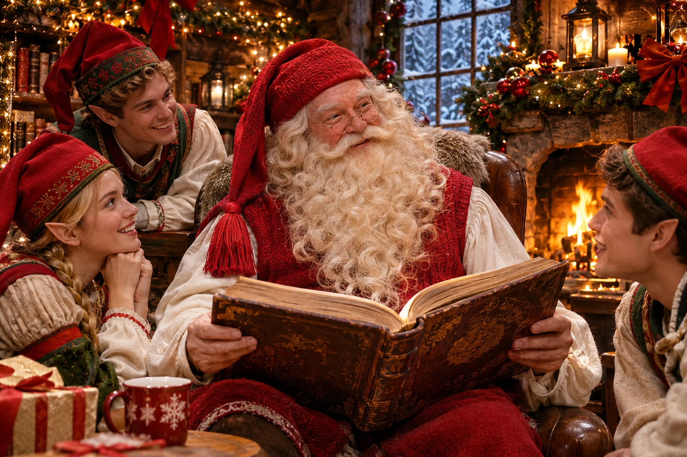

BIENVENIDOS AL CORAZÓN DEL POLO NORTE
La aldea
de Santa
Vive la magia
de la Navidad
Faltan para Navidad
Un saludo con su nombre. Una aventura que recordará.
La ilusión de Santa, creada especialmente para tu familia.
ELIGE SU MOMENTO DE ILUSIÓN
Hay una historia
esperándole.
54 saludos para cada ocasión.
Elige el video, su tarifa y los detalles que lo harán único.
No encontramos ese saludo. Prueba con otro nombre.
Las imágenes muestran los escenarios de referencia. La personalización, entrega y los formatos de llamada o aventura interactiva se coordinan por WhatsApp.
SU SALUDO EMPIEZA AQUÍ
Un nombre.
Mil sonrisas.
Elige el precio y el título de tu saludo. El formulario se adapta automáticamente a tu elección.
WhatsApp · +51 917 823 560MUCHO MÁS QUE UN SALUDO
La magia también
se juega y se comparte.
Un rincón para crear recuerdos
y disfrutar en familia.
REGALA UN DESEO BONITO
Una tarjeta.
Todo tu cariño.
Completa los datos para crear una tarjeta con Santa.
APRENDE, SORPRÉNDETE, JUEGA
Aprende, juega
y sorprende a Santa.
1500 preguntas + modo continuo · 3 niveles.
Partidas de 10 con certificado.
Matemáticas, lenguaje, Biblia, ciencias, cultura general y Navidad.
El gran reto navideño
Escribe tu nombre, elige un nivel y gana tu certificado al completar la partida.
¡MISIÓN COMPLETADA!
Tu certificado navideño
Santa está preparando tu certificado…
ABRE LA PUERTA A UNA NUEVA HISTORIA
Cuentos que empiezan
con su nombre.

Una noche, un libro
y una aventura para ti.
Escribe su nombre y elige un cuento para empezar.
IMAGINAR NO TIENE LÍMITES
Diez libros.
Todos sus colores.
Seis láminas diferentes por libro,
listas para descargar e imprimir en A4.
SANTA TE TIENE UNA SORPRESA
La lista de
los buenos.
Santa lanza su polvo de estrellas y revela tu nombre en letras extragrandes y doradas, mientras Santa pronuncia únicamente el nombre que escribas, después de su anuncio.
Preparando el video de Santa…
Escribe el nombre y prepara tu momento mágico.
UN NOMBRE ESCRITO CON POLVO DE ESTRELLAS
Santa tiene una
lista mágica.
40 escenas con el mismo Santa.
Tu nombre en el cielo, letras mágicas y un video de 15 segundos.
Preparando la escena de Santa…
Santa termina de decir «es»; el nombre aparece entre los destellos y su voz empieza justo después. Permanece visible hasta el final.
Elige una escena y escribe un nombre para crear su tarjeta.
MP4 vertical 9:16 · 720 × 1280 · 15 segundos. Santa pronuncia el nombre después de «es» y los destellos lo revelan en el cielo; la fotografía conserva su pose. La primera exportación descarga el módulo de video.
40 rincones de la aldea
Santa, duendes sin barba, renos, trineos y paisajes nevados. Elige tu escenario favorito.
LA FIESTA MÁS MÁGICA DEL AÑO
Tu cumpleaños,
en la aldea de Santa.
Una invitación de estilo navideño para imprimir o enviar.
EL REGALO CONTINÚA EN PANTALLA
Una tarjeta que guarda
su video.
El QR abrirá el enlace que escribas.
TU PEQUEÑO ESTUDIO NAVIDEÑO
Edita tu video.
Comparte la ilusión.
Recorta, añade un mensaje y elige la música. Exporta tu MP4 y compártelo con las apps disponibles en tu dispositivo.
00:00
El video original se conserva. Aquí crearás una copia con tus cambios.
Compartir abre el menú de tu dispositivo para elegir TikTok, WhatsApp, Instagram, Facebook u otra app compatible. Si tu navegador no permite compartir archivos, descarga el MP4 y adjúntalo en la red elegida.
UNA VOZ QUE TRAE ILUSIÓN
Una llamada
desde el Polo Norte.
El duende te da la bienvenida. Al aceptar con el número 1, Santa te saluda por tu nombre, acompañado de música navideña.
Escucha cómo será la llamada
La misma voz del duende en los dos saludos. Después de «Hola», Santa pronuncia solo el nombre elegido.
El duende te invita a aceptar la llamada.
También puedes pulsar la tecla 1 del teclado.
Esta prueba se escucha aquí; no es una llamada telefónica ni una conversación en vivo.
ANTES DE EMPEZAR
Pequeñas respuestas.
¿Cómo recibo mi saludo personalizado?
Elige un título y su precio y completa el formulario. Copia tu pedido, toca Abrir WhatsApp y pégalo en nuestro chat. Adjunta allí las fotos para coordinar el pago y la entrega del video.
¿Qué incluyen las dos tarifas?
Los videos de S/ 3 o US$ 1 duran de 1 a 3 minutos e incluyen nombre, edad, lugar y foto. Los de S/ 5 o US$ 2 duran de 5 minutos a más y permiten añadir familiares, gustos, logros y mensajes. «Entrega de regalos de Santa» incluye además la tarjeta QR.
¿Cómo descargo o comparto una tarjeta o cuento?
Después de generarlo, toca Descargar imagen o Descargar PDF. Compartir abre las opciones de tu dispositivo cuando están disponibles; también puedes descargar el archivo y adjuntarlo en WhatsApp.
¿La narración tiene exactamente la voz de la muestra?
Puedes escuchar la grabación original. Para leer nombres y cuentos nuevos, el narrador usa una voz en español instalada en tu dispositivo; la disponibilidad y el sonido varían según el navegador.
¿Dónde se guardan mis datos y mis fotos?
Las tarjetas, cuentos y fotos del formulario se procesan en tu dispositivo. La web no sube esos archivos. Tú decides qué enviar al continuar por WhatsApp.